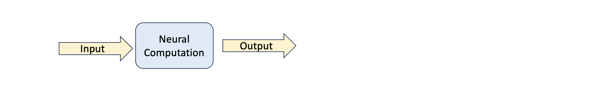
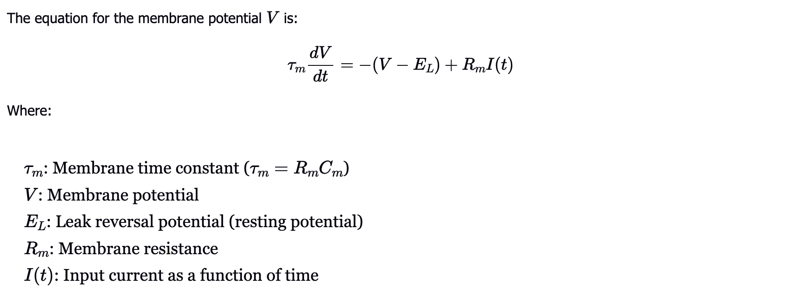

The Leaky Integrate-and-Fire (LIF) model presents a simple model of neuron dynamics.
It demonstrates how neurons integrate incoming input and fire when a threshold is reached.
It does not capture the full biophysical detail but is very useful for studying network behavior and spike timing.
Unlike the Hodgkin-Huxley or Connor-Stevens models, which include detailed ion channel dynamics,
the LIF model uses a linear differential equation to describe subthreshold membrane potential changes.

The equation is:

Components of the Model
1. Passive Integration: The membrane potential V increases over time as input current I(t) is applied.
This integration is leaky and the potential also decays back toward E_L if no input is present.
2. Threshold and Reset: When the membrane potential reaches to the threshold value of V_th, the neuron fires an
action potential. And the membrane potential is immediately reset to a lower value V_reset.
3. Refractory Period: After a spike, the neuron may be held in a refractory period during which it cannot fire again,
even if the threshold is exceeded.
The LIF model is popular in theoretical neuroscience and artificial neural networks because of its simplicity and computational
efficiency.